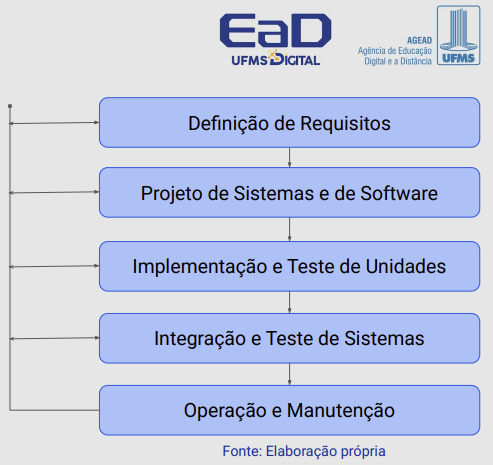
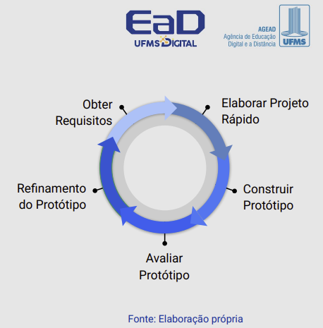

Disciplinas
ANÁLISE E PROJETO DE SOFTWARE ORIENTADO A OBJETOS. Concluído
Materiais
Análise e Projeto de Software Orientado a Objetos - Módulo 1 - Unidade 1 sendProf° ministrante: Luciano Édipo Pereira da Silva.
Conteúdo
Revisão dos modelos de processos de desenvolvimento de software
- Histórico da Orientação a Objetos (OO);
- Modelo em Cascata;
- Modelo de Prototipação;
- Modelo incremental;
- Métodos ágeis;
- Vantagens do Desenvolvimento OO.
- Desafios
Histórico de OO.
- 1967 - Criação da linguagem Simula 67;
- 1972 - Linguagem Smalltalk introduz o termo Programação Orientada a Objetos;
- 1983 - Disponibilização da primeira versão do C++;
- 1988 - Eiffel surge como primeira Linguagem OO “Pura”;
- 1995 - Lançamento da primeira versão da linguagem Java;
- 2000+ - C# e outras linguagens modernas adotam e expandem os princípios OO.
- ...
- Surgimento concomitante de múltiplos Métodos de análise e projeto OO;
- Crescimento da dificuldade de comunicação entre analistas e projetistas de software;
- A Linguagem de Modelagem Unificada (UML) surgiu com o intuito de criar uma notação completa e padronizada para o desenvolvimento de Software OO.
- Tudo é um objeto;
- Classes e instâncias;
- Encapsulamento;
- Herança;
- Polimorfismo;
- Abstração;
- Ex. Smalltalk, Eiffel, Ruby, Scala, Kotlin*
Modelo em Cascata.
- Fluxo sequencial idealista;
- Incerteza natural dificulta definição precipitada de todos os requisitos;
- Longa espera por uma versão executável do software.

Modelo de Prototipação.
Protótipos iniciais desconsideram qualidade global e manutenibilidade a longo prazo;
Implementação comprometida pelo objetivo de produzir protótipos rapidamente.

Modelo incremental
Métodos ágeis
- Manifesto Ágil;
- Incrementais e Iterativos;
- Desenvolvimento e Entrega Contínuos;
- Cultura Colaborativa;
- Flexibilidade e resposta às mudanças de escopo e ambiente;
- Ex. Scrum, XP e Kanban.
Vantagens do Desenvolvimento OO.
- Reutilização propiciada pelo encapsulamento de métodos e dados;
- Extensibilidade dada pelo uso de herança e baixo acoplamento das classes;
- Manutenibilidade facilitada pela modularização natural nas classes;
- Melhor comunicação entre desenvolvedores e usuários;
- Análise dedicada à concretização da “Essência” do Sistema, reduzindo erros em fases posteriores;
- Notação constante da análise à implementação;
- Menor Resiliência a Mudanças.
Problemas e Desafios.
- Complexidade Inicial*;
- Desempenho;
- Planejamento detalhado;
- Dependências e Acoplamento;
- Manutenção de Legados.
Referências:
BOOCH, Grady; RUMBAUGH, James; JACOBSON, Ivar. UML: Guia do Usuário. 2. ed., rev. e atual. Rio de Janeiro: Elsevier, 2012. ISBN 9788535217841.FOWLER, Martin. UML essencial: um breve guia para linguagem padrão. 3. ed. Porto Alegre: Bookman, 2011. ISBN 9788560031382.
LARMAN, Craig. Utilizando UML e padrões: uma introdução à análise e ao projeto orientados a objetos e desenvolvimento iterativo. Porto Alegre: Bookman, 2011. ISBN 9788577800476.
SCHACH, Stephen R. Object-oriented & classical software engineering. 7. ed. Boston: Mcgraw-hill Higher Education, 2007. ISBN 9780073191263.
WAZLAWICK, Raul Sidnei. Análise e design orientados a objetos para sistemas de informação: modelagem com UML, OCL e IFML. Rio de Janeiro: GEN LTC, 2014. ISBN 9788595153653.
WAZLAWICK, Raul Sidnei. Análise e design orientados a objetos para sistemas de informação: modelagem com UML, OCL e IFML. 3. ed. Rio de Janeiro. Elsevier, 2015. ISBN 9788535279849.